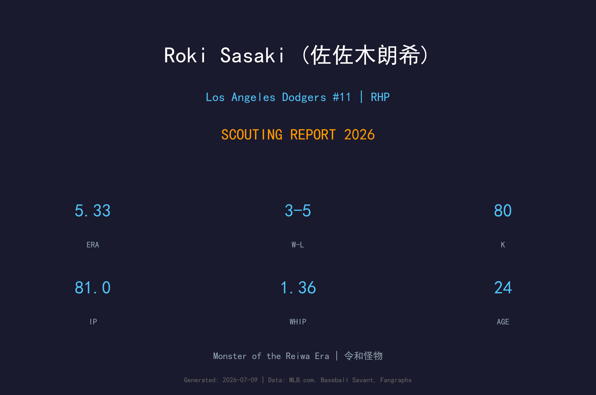
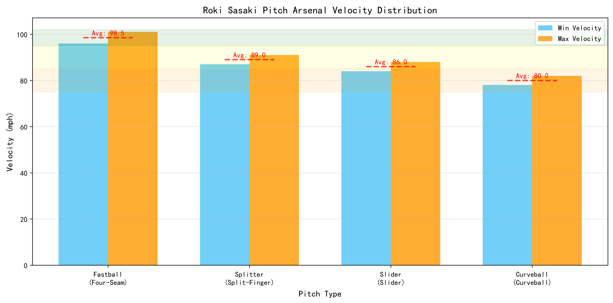
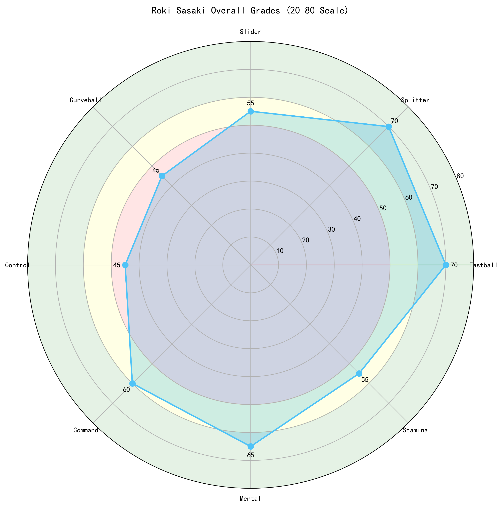

Los Angeles Dodgers #11 | 先发投手 | 活跃

佐佐木朗希是日本棒球界近年来最具天赋的投手之一，被誉为'令和时代的怪物'。他以惊人的速球和犀利的指叉球闻名，高中时期就曾投出时速101英里的快速球。2022年4月10日，他在日本职棒投出了完全比赛，单场19次三振、连续13次三振均创下纪录。2025年加入洛杉矶道奇后，经历了适应期。进入2026赛季，他已从轮值边缘人成长为稳定的先发投手：截至8月20日，22场先发5胜5负、ERA 4.42、116.0局、114次三振，K/9从2025年的6.94提升至8.84，BB/9从5.45大幅降至3.57，WHIP从1.43降至1.30。虽然仍偶有大比分失分，但整体趋势明显向上，已具备大联盟轮值中坚投手的雏形。
在罗德海洋投出完全比赛，单场19次三振、连续13次三振，均创下日本职棒纪录。
转战洛杉矶道奇，3月19日完成大联盟首秀，成为球队备受期待的新秀先发。
10场出赛（8场先发），1胜1负、ERA 4.46、36.1局，BB/9偏高（5.45），仍在适应MLB节奏。
截至8月20日，22场先发5胜5负、ERA 4.42、116.0局、114K，BB/9降至3.57，K/9提升至8.84。
| 赛季 | 球队 | G | GS | W | L | ERA | IP | K | BB | WHIP | K/9 | BB/9 |
|---|---|---|---|---|---|---|---|---|---|---|---|---|
| 2025 | Los Angeles Dodgers | 10 | 8 | 1 | 1 | 4.46 | 36.1 | 28 | 22 | 1.43 | 6.94 | 5.45 |
| 2026 | Los Angeles Dodgers | 22 | 22 | 5 | 5 | 4.42 | 116.0 | 114 | 46 | 1.30 | 8.84 | 3.57 |

⚾ 各球种球速区间（蓝=最低球速，橙=最高球速，红线=平均值）。球速差与位移差越大，打者越难锁定单一球路。
96-101 mph
佐佐木的招牌球种，高中时期就达到101mph。平均球速约98mph，上旋强烈，具有极佳的上升轨迹，能够制造大量挥空。2026年三振能力回升，速球品质仍是 elite 级别。
87-91 mph
极具破坏力的变化球，下落幅度大，速度落差明显。是佐佐木解决打者的关键武器，对左右打者都能制造挥空。
84-88 mph
横向位移明显的滑球，对右打者极具威胁。与快速球搭配使用时效果显著，但仍需提升对左打者的压制力。
78-82 mph
偶尔使用的变化球，主要用于打乱打者节奏。仍在开发中，若能提升稳定性，将成为重要的第四球种。
佐佐木采用高上肩（Over-the-top）的投球机制，出手点高，能够充分运用身高优势制造下坠角度。投球动作流畅，身体协调性出色，虽然投球动作中有些许复杂度，但整体重复性良好。
四缝线快速球是他的致命武器，平均球速约98mph，最高可达101mph以上。球的旋转效率极高，产生强烈的上升效应，使得打者常常挥空或击出高飞球。2026年他的三振能力明显回升，速球仍是主要压制手段。
控球是佐佐木过去最大的挑战，但2026年已有显著改善。BB/9从2025年的5.45降至3.57，保送率大幅下降。随着信心提升，他在好球带边缘的command越来越稳定，早期 inning 的控球问题减少。
作为年轻投手，佐佐木的体能管理仍在开发中，但已有明显进步。2026年每季投球局数从36.1局大幅提升至116局，显示球队对他的信任和身体的成长。若能持续健康，他有望在赛季末接近180局。
目前主要隐患是被全垒打率偏高（2026年21轰/116局，HR/9约1.63）。这反映他偶尔会把速球留在红中，或变化球失投。改善策略执行和球路混合是下一步关键。

未来轮值核心
B+ 级
佐佐木朗希无疑是道奇队未来轮值的重要一环。2026年的进步证明他正在适应大联盟：控球改善、三振回升、局数增加。只要保持健康并继续降低保送与全垒打，他有望在未来2-3年内成为球队的王牌投手。
1. 继续改善控球： 将BB/9进一步压至3.0以下，提升早期 inning 效率。
2. 减少被全垒打： 改善速球位置，避免把球留在红中。
3. 面对左打者： 加强对左打者的应对策略，增加变化球和指叉球的使用。
4. 提升耐力： 目标2026年突破160局，2027年挑战180局。
5. 开发第四球种： 让曲球或变速球成为稳定的配球工具。
- 2026-2027： 稳定轮值成员，ERA目标3.80-4.30，每季160+局
- 2028-2029： 轮值前段投手，ERA目标3.20-3.70，入选全明星
- 2030+： 王牌投手候选人，赛扬奖竞争者
佐佐木朗希的名字源自日本特摄剧《百兽战队牙吠连者》中的反派角色'六鬼'（Rokui）。他有两个兄弟，分别是龙树（Ryuki）和怜树（Reiki）。
2011年3月11日，年仅9岁的佐佐木正在陆前高田市立高田小学读三年级。那天，日本发生了里氏9.1级的大地震，随后引发了巨大的海啸。佐佐木在这场灾难中失去了父亲和祖父母。陆前高田市超过1,750名市民在这场灾难中遇难或失踪。
这段经历深深影响了佐佐木。在2025年加盟道奇队的记者会上（当时正值洛杉矶山火肆虐），他说道：'我也曾经历过灾难，遭受过很多痛苦，但我努力不要忘记始终向前看。'
佐佐木在高中时期就被称为'令和时代的怪物'，这个绰号是对前辈松坂大辅（被称为'平成时代的怪物'）的致敬。高中时他的快速球就达到了101mph。
2022年4月10日，他在日本职棒投出了完全比赛，成为日本职棒史上第16位达成此成就的投手，也是自1994年牧原成以来首位。那场比赛他三振19人，包括连续13次三振，创下了日本职棒纪录。
加盟道奇队后，队友米格尔·罗哈斯（Miguel Rojas）将自己的11号球衣让给了他。作为感谢，佐佐木送给罗哈斯三瓶清酒和一套酒具。